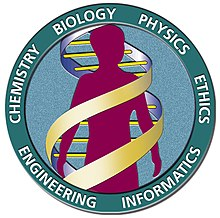
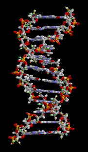

Проект «Геном человека» (англ. The Human Genome Project, HGP) — завершённый международный научно-исследовательский проект, главной целью которого было определение пар оснований, которые составляют ДНК человека, а также выявление, картирование и секвенирование всех генов человеческого генома как с физической, так и с функциональной точки зрения. Этот проект остается крупнейшим международным биологическим проектом, когда-либо проводившимся в биологии. К 2003 году было секвенировано лишь 85 % генома человека, проект был завершён в 2022 году, когда было достигнуто полное секвенирование генома человека (не учитывая Y).

Проект начался в 1990 году под руководством Джеймса Уотсона под эгидой Национальной организации здравоохранения США. В 2000 году был выпущен рабочий черновик структуры генома, полный геном — в 2003 году, однако и сегодня дополнительный анализ некоторых участков ещё не закончен. Частной компанией Celera Corporation был запущен аналогичный параллельный проект, завершённый несколько ранее международного. Основной объём секвенирования был выполнен в двадцати университетах и исследовательских центрах США, Великобритании, Японии, Франции, Германии и Китая. Кроме очевидной фундаментальной значимости, определение структуры человеческих генов является важным шагом для разработки новых медикаментов и развития других аспектов здравоохранения.
Хотя целью проекта по расшифровке генома человека являлось понимание строения генома человеческого вида, проект также фокусировался и на нескольких других организмах, среди которых — бактерии, в частности, Escherichia coli, насекомые, такие, как мушка дрозофила, и млекопитающие, например, мышь.

Геном был разбит на небольшие участки, примерно по 150 000 пар нуклеотидов в длину. Эти куски затем встраивали в вектор, известный как Искусственная бактериальная хромосома или BAC. Эти векторы созданы из бактериальных хромосом, измененных методами генной инженерии. Векторы, содержащие гены, затем можно вставлять в бактерии, где они копируются бактериальными механизмами репликации. Каждый из кусочков генома потом секвенировали раздельно методом дробовика, и затем все полученные последовательности собирали в оедино уже в виде компьютерного текста. Размеры полученных больших кусков ДНК, собираемых для воссоздания структуры целой хромосомы, составляли около 150 000 пар нуклеотидов. Такая система известна под именем «иерархического метода дробовика», потому что вначале геном разбивается на куски разного размера, положение которых в хромосоме должно быть заранее известно.
Проект финансировался правительством США через Национальный Институт Здравоохранения и британским благотворительным обществом Wellcome Trust, которое финансировало Институт Сенгера, а также множество других групп по всему свету. Финансирование распределялось между несколькими крупными центрами секвенирования включая Whitehead Institute, Институт Сенгера, Университет Вашингтона в Сент-Луисе и Baylor College of Medicine.
Существуют многочисленные определения «полной последовательности человеческого генома». Согласно некоторым из них, геном уже полностью секвенирован, а согласно другим, этого ещё предстоит добиться. В популярной прессе было множество статей, сообщающих о «завершении» генома. На данный момент завершается этап секвенирования генома, то есть определения порядка расположения нуклеотидов в нуклеиновых цепях человеческой ДНК. Собственно работы по интерпретации результатов секвенирования еще впереди. Это и будет расшифровка или прочтение генома. График истории расшифровки проекта показывает, что большая часть по секвенированию человеческого генома была закончена в конце 2003 года.
Однако ещё остаётся несколько регионов, которые считаются незаконченными:
Прежде всего, центральные регионы каждой хромосомы, известные как центромеры, которые содержат большое количество повторяющихся последовательностей ДНК; их сложно секвенировать при помощи современных технологий. Центромеры имеют длину миллионы (возможно десятки миллионов) пар нуклеотидов, и, по большому счёту, остаются несеквенированными.
Во-вторых, концы хромосом, называемые теломерами, также состоящие из повторяющихся последовательностей, и по этой причине в большинстве из 46 хромосом их расшифровка не завершена. Точно не известно, какая часть последовательности остаётся не расшифрованной до теломер, но как и с центромерами, существующие технологические ограничения препятствуют их секвенированию.
В-третьих, в геноме каждого индивидуума есть несколько локусов, которые содержат членов мультигенных семейств, которые также сложно расшифровать с помощью основного на сегодняшний день метода фрагментирования ДНК. В частности, эти семейства кодируют белки, важные для иммунной системы.
Кроме перечисленных регионов, остаётся ещё несколько брешей, разбросанных по всему геному, некоторые из которых довольно крупные, но есть надежда, что все они будут закрыты в ближайшие годы.
Бо́льшая часть остающейся ДНК сильно повторяющаяся, и маловероятно, что она содержит гены, однако это останется неизвестным, пока они не будут полностью секвенированы. Понимание функций всех генов и их регуляции остается далеко неполным. Роль мусорной ДНК, эволюция генома, различия между индивидуумами и многие другие вопросы по-прежнему являются предметом интенсивных исследований в лабораториях всего мира.